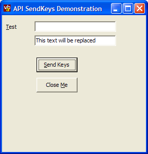

SendKeys Demonstration (16K)
SendKeys Demonstration (16K)
 Bugs: 1 / 1
Bugs: 1 / 1
 Issues: 0 / 0
Issues: 0 / 0
 Questions: 0 / 0
Questions: 0 / 0
 5 Sep 2003
5 Sep 2003
First Posted
 Convert a Character Code to a string describing the Keyboard Keys which must be pressed
Convert a Character Code to a string describing the Keyboard Keys which must be pressed
 Moving, Clicking and Tracking the MousePointer in Code
Moving, Clicking and Tracking the MousePointer in Code
 Get the state of a key at any time
Get the state of a key at any time

SendKeys using the API
VB provides the SendKeys command which is supposed to create key events in the focus control. However, in practice SendKeys sometimes doesn't work correctly, it is missing some keys and doesn't offer much flexibility in controlling the sequence of key strokes that gets sent. This article demonstrates using the Win32 keybd_event API call to circumvent these limitations.
About keybd_event
The keybd_event functions synthesizes keystrokes; it is essentially the same routine that is called by a keyboard driver to generate real key events. Although the function has been superceded in NT and more modern 9x versions by SendInput it is still implemented on all systems and works well in most cases.
keybd_event itself takes two useful parameters; the virtual key code to emulate a keystroke for and a flag indicating whether the event is a key up or key down event.
There are two ways of setting the virtual key code. Firstly, you can use the virtual key constant directly. VB contains constants for most of the virtual key codes in the KeyCodeConstants enumeration, however, there are a number of missing keys such as the right mouse button key on the keyboard. Secondly, you can use the API VkKeyScan function to get the key code for a particular character.
Bringing this together, we can write simple functions to create key down and key up events:
Private Declare Sub keybd_event Lib "user32" ( _
ByVal bVk As Byte, ByVal bScan As Byte, _
ByVal dwFlags As Long, ByVal dwExtraInfo As Long)
Private Const KEYEVENTF_EXTENDEDKEY = &H1
Private Const KEYEVENTF_KEYUP = &H2
Private Declare Function GetVersion Lib "kernel32" () As Long
Private Declare Function VkKeyScan Lib "user32" Alias "VkKeyScanA" ( _
ByVal cChar As Byte) As Integer
Private Declare Function VkKeyScanW Lib "user32" ( _
ByVal cChar As Integer) As Integer
Private Declare Sub CopyMemory Lib "kernel32" Alias "RtlMoveMemory" ( _
lpvDest As Any, lpvSource As Any, ByVal cbCopy As Long)
Public Sub KeyDown(ByVal vKey As KeyCodeConstants)
keybd_event vKey, 0, KEYEVENTF_EXTENDEDKEY, 0
End Sub
Public Sub KeyUp(ByVal vKey As KeyCodeConstants)
keybd_event vKey, 0, KEYEVENTF_EXTENDEDKEY Or KEYEVENTF_KEYUP, 0
End Sub
Public Function KeyCode(ByVal sChar As String) As KeyCodeConstants
Dim bNt As Boolean
Dim iKeyCode As Integer
Dim b() As Byte
Dim iKey As Integer
Dim vKey As KeyCodeConstants
Dim iShift As ShiftConstants
' Determine if we have Unicode support or not:
bNt = ((GetVersion() And &H80000000) = 0)
' Get the keyboard scan code for the character:
If (bNt) Then
b = sChar
CopyMemory iKey, b(0), 2
iKeyCode = VkKeyScanW(iKey)
Else
b = StrConv(sChar, vbFromUnicode)
iKeyCode = VkKeyScan(b(0))
End If
KeyCode = (iKeyCode And &HFF&)
End Function
Being able to independently make key down and key up calls can make using send keys more flexible. However, you should be careful to ensure you pair key down and up calls, particularly with the control, alt and shift keys otherwise your computer can become hard to use!
Demonstration Application
The demonstration application takes the code given above and wraps an implementation of the VB SendKeys parser around it in a class called cSendKeys. This class can be used almost as a drop in replacement for the VB SendKeys function, the only difference being that you need to create an instance of the class and use it to call the SendKeys method. The application uses this class to perform a variety of key operations on it's own form (although practically you would probably use this code to automate another window).